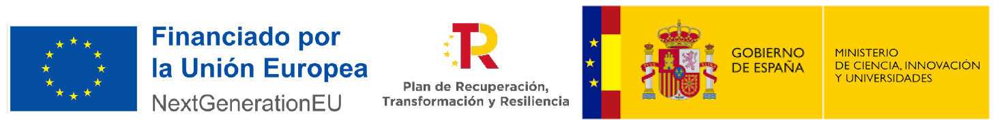

UNIMOODLE es un proyecto colaborativo de las universidades de Valladolid, Complutense de Madrid, País Vasco/EHU, León, Salamanca, Illes Balears, Valencia, Rey Juan Carlos, La Laguna, Zaragoza, Málaga, Córdoba, Extremadura, Vigo, Las Palmas y Burgos para desarrollar herramientas que mejoren los campus virtuales basados en Moodle.
KUET es un módulo de actividad para Moodle que permite organizar sesiones interactivas de preguntas, votaciones y competiciones a partir del banco de preguntas. El profesorado puede dirigir una sesión en directo o permitir que los estudiantes avancen a su ritmo, individualmente o en equipos.
Demostración de KUET
El 25 de abril de 2024 se celebraron en Valladolid las Jornadas técnicas de UNIMOODLE, donde se presentaron las primeras versiones de los proyectos. El vídeo muestra algunas funcionalidades de KUET en una demostración en vivo.
Reutiliza las preguntas del banco de Moodle y prepara varias sesiones dentro de una misma actividad.
Combina avance manual o programado con los modos inactivo, podio y carrera. Configura tiempos, clasificaciones y retroalimentación según tus objetivos.
Consulta informes de sesiones, participantes y preguntas, y descárgalos en los formatos habilitados en tu plataforma.
KUET es software de código abierto impulsado por UNIMOODLE.
Para docentes, formadores y estudiantes que utilizan Moodle y quieren incorporar participación y evaluación interactiva a sus cursos. KUET es compatible con Moodle 4.1 (desde 4.1.2), 4.2 y 4.3–4.5. Moodle 5.0 aún no es compatible por el cambio del sistema de bancos de preguntas. Consulta qué versión instalar.
KUET se integra con el banco de preguntas, el libro de calificaciones y la finalización de actividad de Moodle. Su interfaz se adapta a dispositivos móviles.
Profesores y estudiantes trabajan en su plataforma habitual, con los roles, cursos y agrupamientos de Moodle.
Muestra respuestas, retroalimentación y estadísticas durante las sesiones manuales. Al finalizar, consulta resultados por sesión, participante y pregunta para identificar aciertos y dificultades.
Elige avance manual, dirigido por el profesor, o programado, al ritmo del estudiante. Combínalo con inactivo, podio o carrera, y participa individualmente o en equipos. Descubre los seis modos de sesión.
